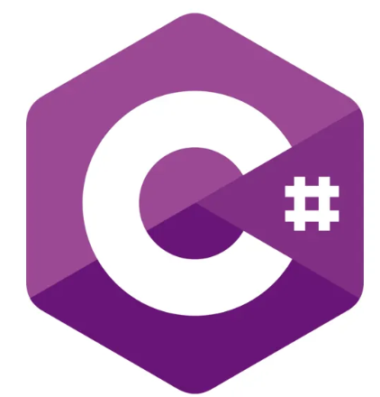

HTTP
Sondeo Corto
El cliente inicia solicitudes periódicas, generando un desperdicio masivo de ancho de banda y CPU debido a encabezados HTTP redundantes en respuestas vacías.
Explorando la arquitectura técnica y la evolución de los protocolos de mensajería en tiempo real para el desarrollo moderno.
Explorar Arquitectura
El chat web redefine la comunicación mediante un flujo de datos bidireccional instantáneo. A diferencia del paradigma tradicional de Petición-Respuesta, donde el servidor es un receptor pasivo, el sistema moderno permite que el servidor envíe actualizaciones proactivamente al cliente. Esta arquitectura elimina el retraso inherente a las peticiones periódicas, permitiendo una experiencia de usuario fluida y sin interrupciones.
El cliente inicia solicitudes periódicas, generando un desperdicio masivo de ancho de banda y CPU debido a encabezados HTTP redundantes en respuestas vacías.
El servidor mantiene la conexión abierta hasta que existan datos, consumiendo excesivos recursos de socket y sufriendo de sobrecarga en el reconectado constante.

Interfaz de usuario y gestión de conexiones iniciales. La capa cliente es el puente entre el usuario y el sistema, encargada de la experiencia de interacción inmediata.

Motor de eventos y gestión de sockets. Esta capa es el corazón del sistema, gestionando miles de conexiones TCP simultáneamente con eficiencia y bajo consumo de recursos.

Almacenamiento de datos y caché. Garantiza la durabilidad y recuperación de mensajes, asegurando que la información no se pierda en caso de desconexión del cliente.

Utiliza un solo hilo con I/O no bloqueante, delegando operaciones de red al motor libuv para máxima eficiencia.

Permite manejar cientos de miles de conexiones concurrentes utilizando rutinas ligeras gestionadas por el runtime de Go.

Permite gestionar WebSockets de forma asíncrona integrando el motor asyncio para una escalabilidad extrema.

Abstrae la comunicación en tiempo real seleccionando automáticamente WebSockets, Server-Sent Events o Long Polling.